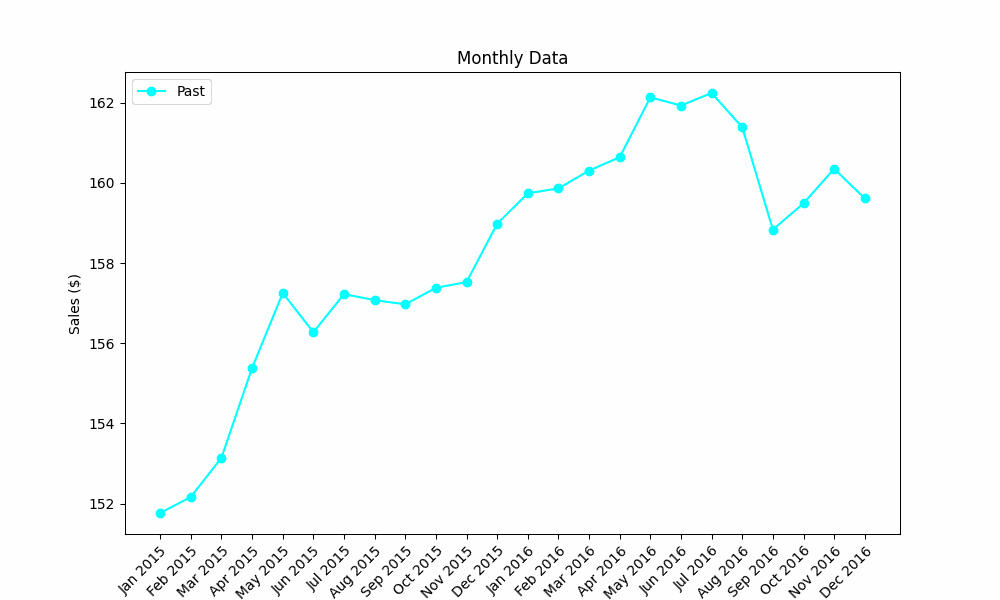

In this tutorial, you'll learn about time series data, key terminologies in time series analysis, forecasting models, and explanation methods for these models.
Any data recorded with some fixed interval of time is called time series data. This fixed interval can be hourly, daily, monthly or yearly for example. The following figure illustrates a time series forecasting problem, focusing on wine sales at a store recorded monthly, for forecasting future months' sales.

Lag: In time series, given a time point t, a 'lag' refers to a time point prior to t. In the figure
below, if t is December 2023, then any preceding month is considered a lag. The value of a lag is the value of the variable at the time point referred to by this lag.
For example, the value corresponding to the lag of November 2023 is £25,364. For convenience, we name it 'lag1'.
Rolling window: A 'rolling window' of size n refers to a time period prior to time point t
spanning over n lags. The rolling window shifts chronologically backwards by m lags each time.
In the figure below, the size of the rolling window is 3 (i.e., n=3), and it shifts backwards by one
lag (i.e., m=1) each time. The value of a rolling window is calculated as the average of the values of its included lags.
For convenience, we name them in sequential order.